红色篇章 · RED
红四方面军总指挥部旧址纪念馆
全国重点红色教育基地、国家二级博物馆、全国爱国主义教育示范基地。1932 年冬红四方面军入川后，总指挥部驻节通江文庙，在此指挥创建全国第二大苏区——川陕革命根据地。
全国重点文物保护单位川陕苏区核心场馆
本次调研以现场观察、场馆记录、实景考察、资料研读为主要方式，系统收集场馆展陈内容、文化资源、运营现状与宣传推广情况，为地方文化保护、传播与创新发展提供现实参考。
全国重点红色教育基地、国家二级博物馆、全国爱国主义教育示范基地。1932 年冬红四方面军入川后，总指挥部驻节通江文庙，在此指挥创建全国第二大苏区——川陕革命根据地。

全国唯一以银耳文化为主题的博物馆、第四批“四川省科普基地”。聚焦通江银耳千年栽培技艺与产业文化，是川东北少见的特色农产品非遗专题科普场馆。
记录场馆空间布局与开放运营
梳理展陈体系与文物资料
深入建筑群落与生态园区
比对文献档案与宣传史料
从一座始建于宋代的文庙，到红四方面军总指挥部驻地，再到今天全国爱国主义教育示范基地——它承载着巴中最具代表性的红色基因，见证川陕苏区作为全国第二大革命根据地的辉煌历史。
通江文庙始建，明清重建修缮，一进四院、依山就势，成为县城最宏伟的古建筑群。
从鄂豫皖苏区西征的红四方面军越秦岭、翻巴山攻克通江县城，总指挥部、总政治部驻节文庙与学宫。
徐向前、陈昌浩、王树声等在此运筹帷幄，创建川陕革命根据地——鼎盛时 4.2 万平方公里、辖 23 县 1 市、人口约 600 万，为中华苏维埃共和国第二大区域。
纪念红军入川五十周年，旧址辟为“川陕革命根据地军史陈列馆”，胡耀邦题写馆名。
中宣部批准更名“红四方面军总指挥部旧址纪念馆”；江泽民总书记题写馆名。
先后命名全国爱国主义教育示范基地、列入全国红色旅游经典景区名录，为国家二级博物馆、国家红色基因库建设单位。
启动《红军劲旅 丰碑永存——红四方面军战斗历程》基本陈列改陈布展，展陈、声光电、数字化全面提档升级。
馆区与通江红军城历史街区融为一体，实现文物旧址、红色街区、纪念展馆的一体化展示。
占地面积 1512㎡、建筑面积 680㎡，警卫室、机要室、作战室、办公室分布于戟门、东庑、西庑与大成殿。
与文庙同年代修建，全系木结构、一进四院，保存完好。
由红军改名的公园，从纪念馆后门可达，是当年红军与百姓共用的休憩之地。
环形四合院展馆以“巴山烽火”为主题，运用历史文献、文物、图片、油画、雕塑、场景及声像多媒体，完整再现川陕苏区创建与发展历程。
红四方面军入川建政，通南巴为中心的苏区格局形成。
总指挥部作战指挥，粉碎“三路围攻”“六路围攻”，歼敌 15 万余人。
红军标语、石刻标语遍及巴山，民众踊跃支前参军。
苏区开展土地革命与生产建设，保障根据地供给。
红军医务事业与战地救护的珍贵记忆。
妇女支前、参军参战，巾帼不让须眉。
“将帅风采”展厅陈列 400 余名将军与通江籍 10 位开国将军的光辉业绩。
集成 360° 全景漫游，访问量突破 10 万人次；数字化资源近 1000 件，支撑云端学术研究。
线上线下开展宣讲 400 余场次，受众达 5 万余人次。
连续举办九届，培养 400 余名少年儿童红色文化宣讲员，获央视《焦点访谈》报道。
研发 20 类 100 余件文创产品，为首批四川省文化创意产品试点开发单位。
录播《两张党证》《红色通江》等 50 余个宣传视频，荣获全省优秀文博短视频称号。
与井冈山、延安等知名场馆联合办展，在全国 20 余个红色市县巡展。
聚焦通江银耳千年栽培技艺与产业文化。通江是中国银耳发祥地，“天生雾、雾生露、露生耳”，一朵银耳沉淀了千年山地农耕智慧，也是巴中独有的、不可复制的本土特色文化名片。
据《齐民要术》《本草问答》等典籍记载，通江有悠久的种植、食用银耳历史。
人工培育成功并大规模种植，通江银耳生产传统技艺由此诞生，沿用至今；清代即成为宫廷贡品，20 世纪初畅销欧美及东南亚，技艺东传日本。
通江被中国特产之乡组委会正式命名为“中国银耳之乡”。
国家实施原产地保护，次年“通江银耳”获国家地理标志产品保护，以“中国银耳”合法代表身份登上世界特产殿堂。
博物馆于银耳发祥地陈河乡“九湾十八包”雾露溪畔成立；2014 年 10 月迁入高明新区周子坪新馆正式开馆。
通江银耳综合产值达 35 亿元，品牌价值 96.61 亿元，位列中国食药用菌（耳类）区域品牌价值榜单第二。
博物馆建筑主体为“大露珠”，依据通江银耳“天生雾、雾生露、露生耳”的生长特性进行形态抽象与提升，以圆润的自然形态布置于绿色生态场地，既象征雾露，又象征耳花。半透明建筑形象与银耳高贵、典雅、脱俗的气质吻合。
占地约 40050㎡，生态文化景观 28430㎡。
建筑面积 5990㎡，陈列布展 3700㎡。
全国第二批免费开放博物馆、第四批“四川省科普基地”。
入口广场、浣纱池、爱心栈道、月影池沿主轴展开。
陈列布展由“天赐、地蕴、人润、和合、神奇、品鉴、乐享”七大部分组成，采用平面立体模型、实物、多媒体等手法，全方位展示通江银耳的历史典故、种植技术、发展过程、神奇功效与产品开发。
通江银耳生产传统技艺采用纯手工操作、传统手工器具，是通江农耕文化的鲜活标本。耳棒必须是树龄 7 年以上的优质青冈树，砍山前还要举行隆重的祭山仪式。
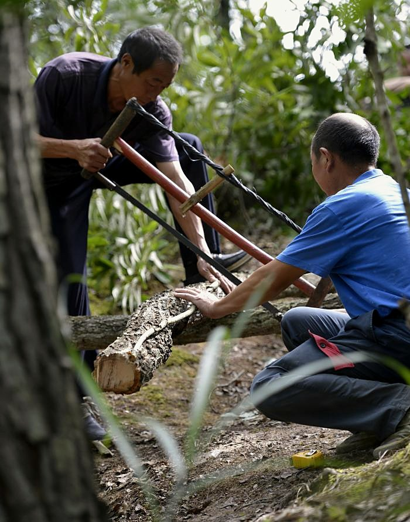
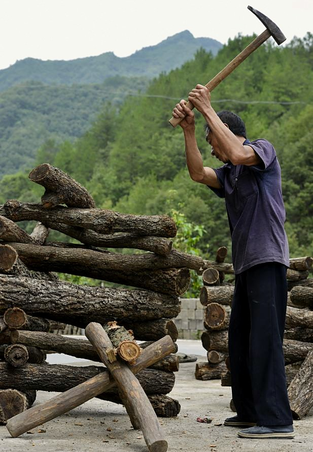
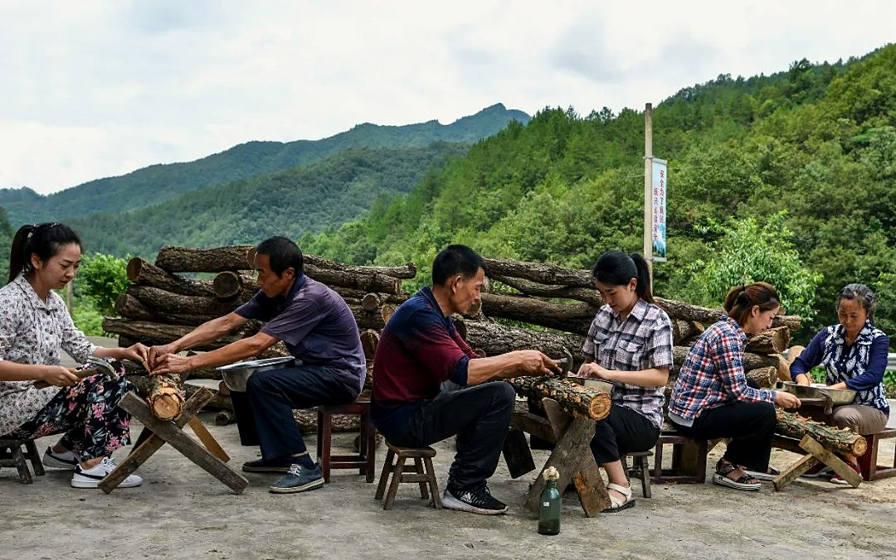
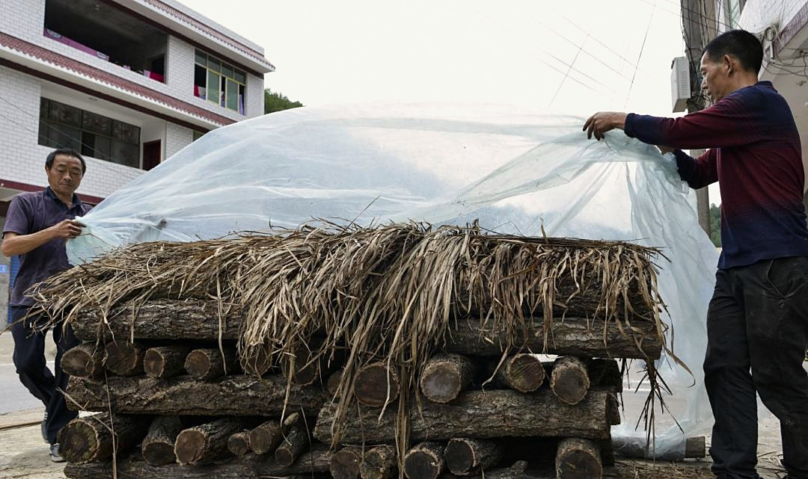
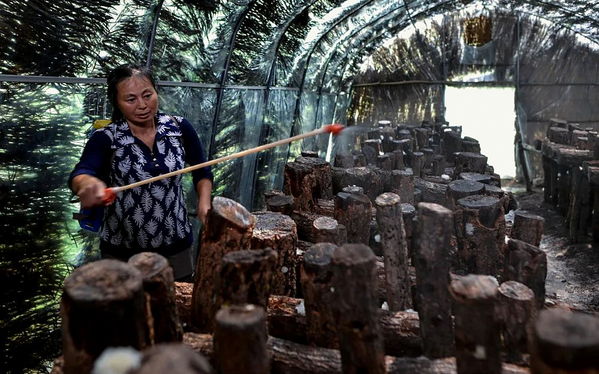
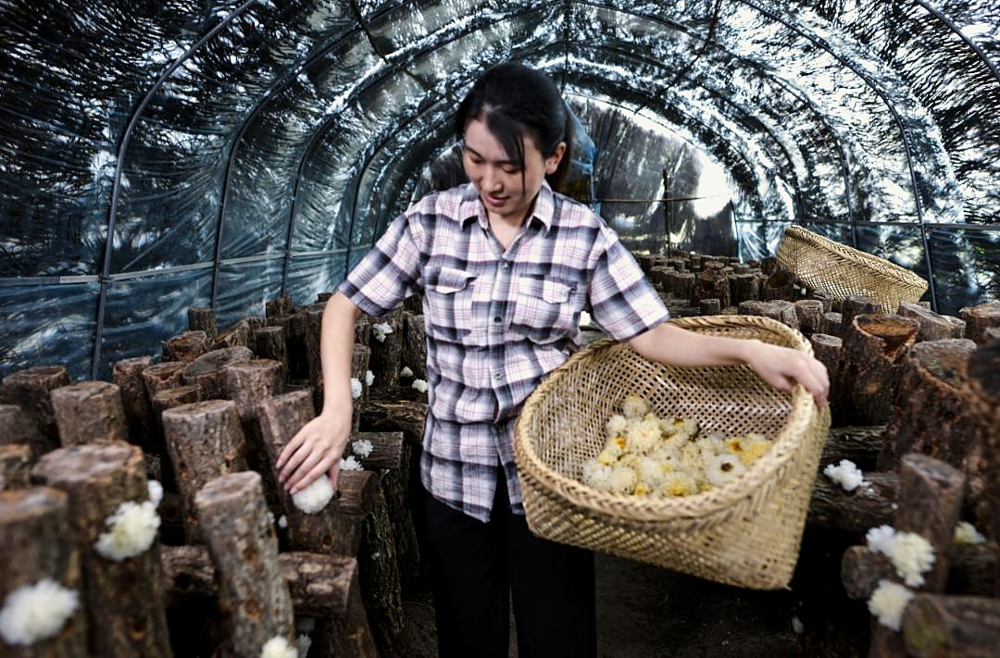
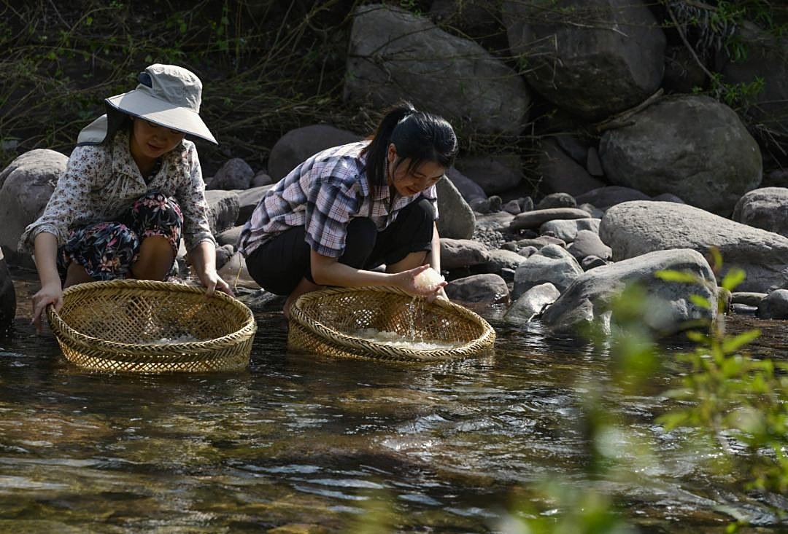
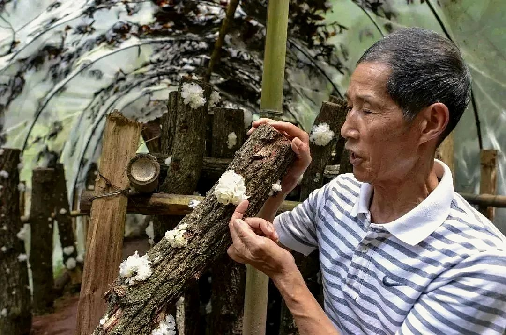
1974 年，屈全飘通过对通江银耳香灰菌丝与福建银耳菌丝配对共生，培育出“7902”号株系，显著提高银耳产量品质，彻底解决烂耳难题，被耳农尊称为“银耳大王”。退休后仍在家乡建实验室，每年免费赠送优质菌种给贫困户。
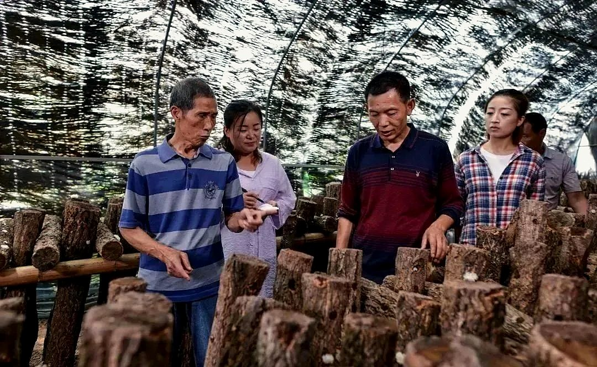
朵型大——鲜耳直径 80—100 毫米，大者可达 180 毫米；白如脂玉、肉头厚达 3 毫米；干耳吸足水分后重量可增至 16 倍；易炖化、老少皆宜，兼具极高药用价值。
通江银耳围绕食品、化妆品、医药保健品三大主攻方向，开发出银耳羹、银耳酒、银耳饮料、银耳面膜等 7 大系列 30 余个产品；以发祥地陈河乡为依托建设产业研发园，打造银耳特色文化街与万亩亿元示范区。
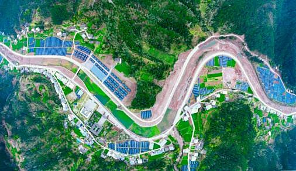
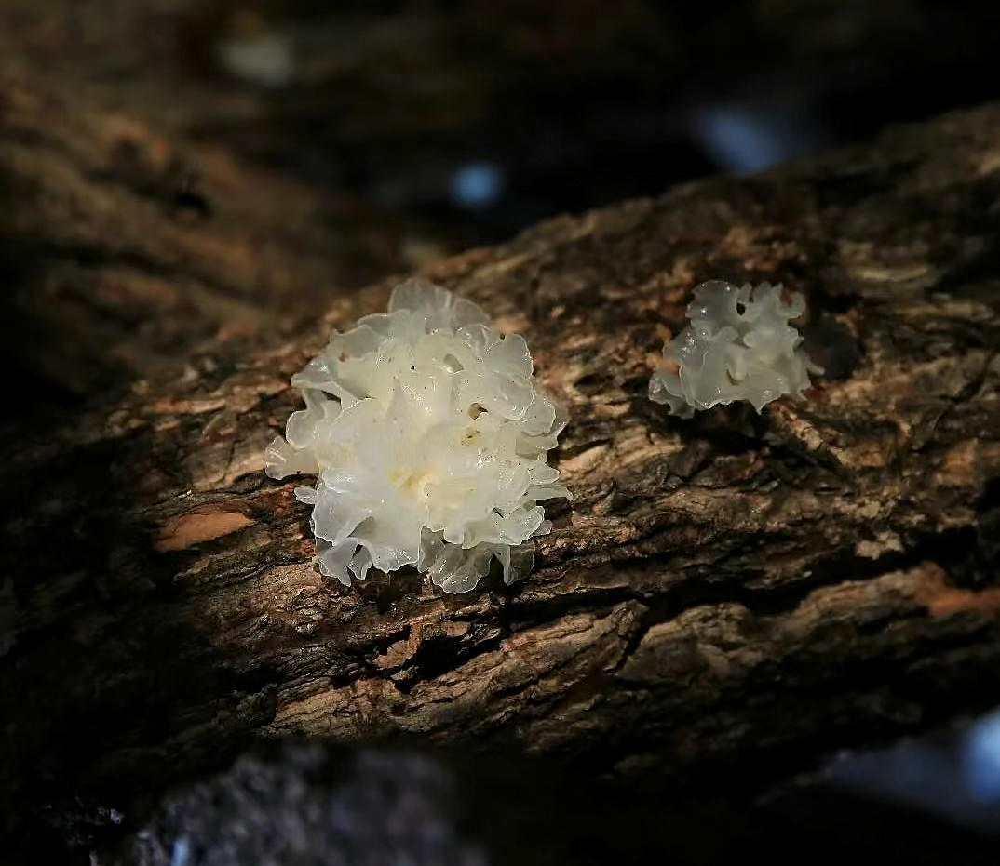
一红一绿、一历史一产业，两处场馆完整展现了巴中既有厚重革命底蕴、又有独特乡土物产文化的多元本土文化格局。
红四方面军总指挥部旧址纪念馆承载巴中核心红色基因，见证川陕苏区作为全国第二大革命根据地的辉煌历史，是巴中最具代表性的红色文化 IP，体现川东北人民坚韧奋斗、拥军爱国的本土精神底色。
通江银耳博物馆承载巴中独有的乡土非遗文化，沉淀千年山地农耕智慧与特色物产文化。区别于通用历史展馆，是巴中独有的、不可复制的本土特色文化名片。
两处场馆独立运营、主题割裂，红色文化与银耳乡土文化未形成联动宣传路线，游客多单点参观，缺乏巴中本土文化整体叙事。
场馆以传统展板、静态展陈为主，互动体验、数字化展示、年轻化科普内容偏少，对青少年、研学群体吸引力有待提升。
大众对巴中认知多停留在红色文化，对银耳非遗、山地农耕本土特色文化了解较少，场馆对外宣传曝光度有限。
红色资源与产业资源各自为阵，缺乏统一的线路规划、产品设计与品牌传播策略。
整合红色革命教育与银耳非遗科普资源，打造“红色旧址 + 特色非遗”本土文化研学路线，实现巴中历史文化与乡土产业文化双向传播。
增加短视频科普、情景互动、VR 复原、技艺体验等年轻化内容，适配当代研学与大众文旅需求。
依托两处核心场馆，系统推广“巴中红色根脉 + 巴山特色非遗”双重文化名片，提升地方文化辨识度与影响力。
本次实地调研通过走访红四方面军总指挥部旧址纪念馆与中国通江银耳博物馆，系统认识了巴中通江红色革命文化、特色非遗产业文化两大核心本土文化体系。
两处场馆保存完整、价值独特，既是地方历史记忆的保存载体，也是本土文化传承、科普教育、文旅发展的重要阵地。
调研同时发现场馆融合不足、传播形式传统、IP 辨识度不强等问题，并据此提出双线线路、数字展陈、IP 塑造三条对策。
本次实地调研让我对巴中本土多元文化有了具象、立体的认知，深刻理解地方传统文化保护与活化利用的重要意义。
为后续本土文化研究、文旅发展探索提供了真实的实地依据，也为红色研学、非遗科普等社会实践积累了第一手素材。